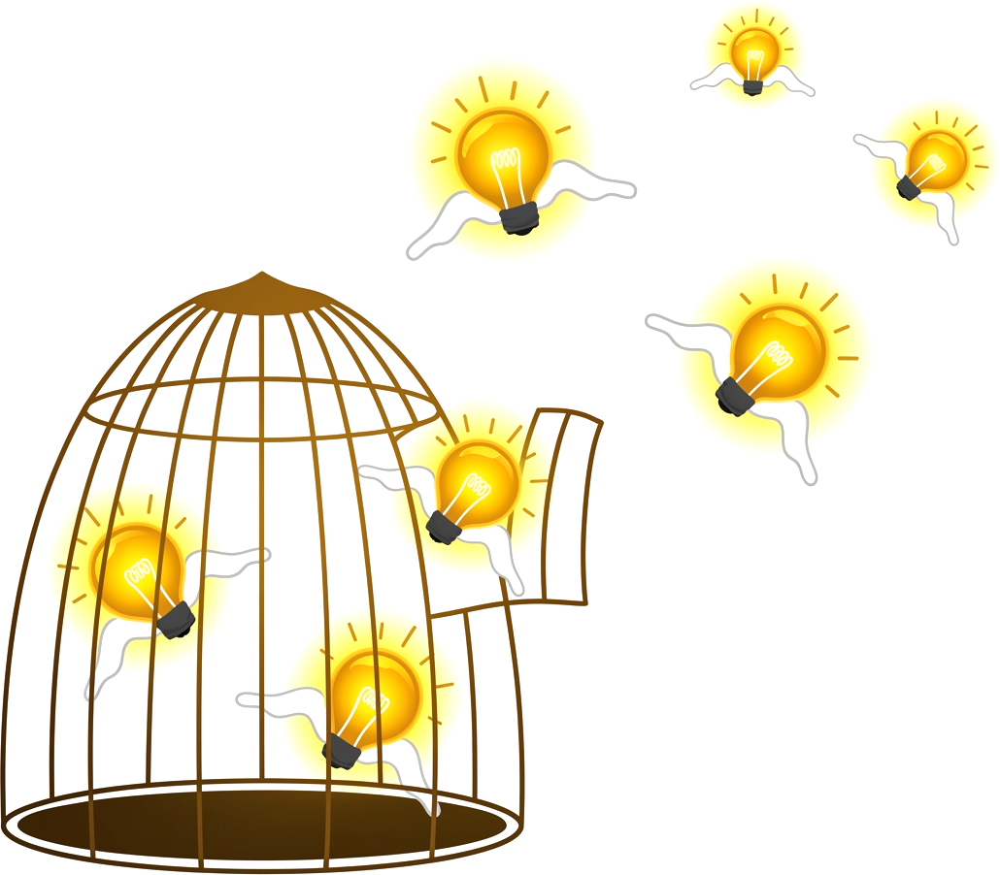
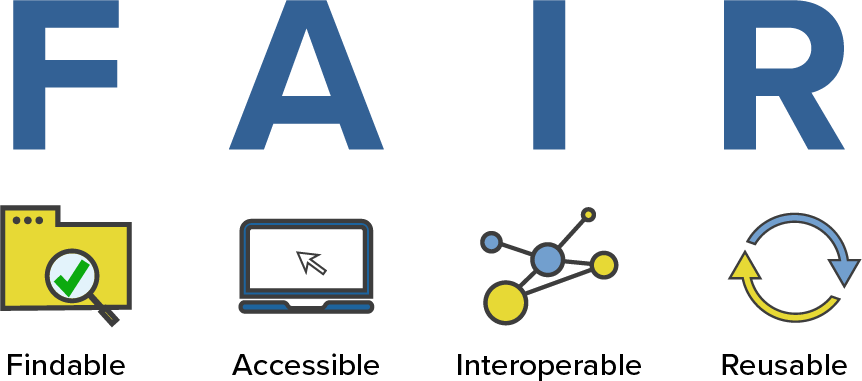
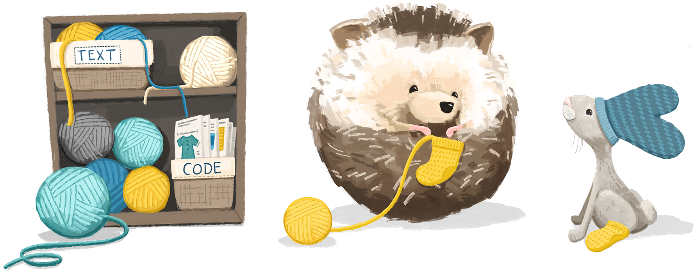
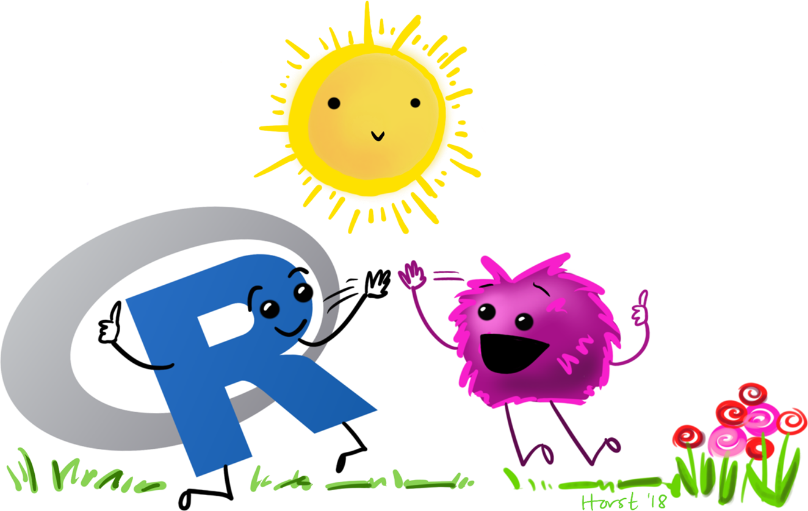

Zenodo
Publique. Cite. Preserve.
Daniel Vartanian
21 de setembro de 2026
Oiê! 👋
Esta apresentação fala sobre o Zenodo, um repositório universal para todos os tipos de pesquisa acadêmica.
Aqui estão os tópicos principais:
- O que é?
- Por que usá-lo?
- Como usá-lo?
- Como não usá-lo?
- Exemplos de uso

(Arte de Afry Harvy)
Zenodo
O Zenodo é um repositório aberto para toda a produção acadêmica (catch-all repository), que permite a pesquisadores de todas as áreas compartilhar e preservar seus resultados de pesquisa, independentemente do tamanho ou do formato. (OpenAIRE, s. d.)
Curiosidade: O nome Zenodo deriva de Zenódoto, o primeiro bibliotecário da Antiga Biblioteca de Alexandria.
Zenodo
Princípios FAIR

Por Que Usar o Zenodo?
👀 Visibilidade
Seus materiais ficam citáveis (com DOI), localizáveis e com métricas de atenção por artigo.
🤝 Confiança
Dados armazenados no CERN, com preservação de longo prazo.
✨ Organização
Versionamento, revisão e embargo de materiais.
🤸♂️ Flexibilidade
Licenciamento aberto ou restrito, conforme a sua necessidade.
✅ Boas práticas
Compatível com os princípios FAIR.
Como Usar o Zenodo
🫵 Para quem
Pesquisadores, comunidades científicas e instituições, sem exigir fonte de financiamento.
♾️ O quê
Dados, software, artigos, resumos, tabelas, fotos, …
📄 Formato
Qualquer arquivo, sem exigências de tamanho, acesso ou licença.
👥 Comunidades
Crie a sua (workshop, projeto, departamento ou periódico) e aceite ou rejeite envios.
🤖 Automação
APIs e hooks no GitHub para integrar ao seu fluxo de pesquisa.
Como Não Usar o Zenodo
⛔ Fins não acadêmicos
Não é um repositório para uso pessoal ou comercial
⛔ Serviço de backup
O armazenamento do Zenodo foi feito para ser imutável. Ele é feito para preservação.
⛔ Informações confidenciais ou privadas
Não é um local seguro para esse tipo de dado.
⛔ Arquivos de grande porte
Os registros possuem limite de 50GB e um máximo de 100 arquivos.
Exemplos de Uso
Saiba Mais
OpenAIRE. (n.d.). Zenodo: A universal repository for all your research outcomes. https://www.openaire.eu/zenodo-guide
GO FAIR initiative. (n.d.). GO FAIR initiative: Make your data & services FAIR. https://www.go-fair.org
Bezjak, S., Clyburne-Sherin, A., Conzett, P., Fernandes, P., Görögh, E., Helbig, K., Kramer, B., Labastida, I., Niemeyer, K., Psomopoulos, F., Ross-Hellauer, T., Schneider, R., Tennant, J., Verbakel, E., Brinken, H., & Heller, L. (2018). Open science training handbook. https://open-science-training-handbook.gitbook.io
Dunleavy, P., & Monteath, T. (2026). Doing open social science: A guide for researchers. LSE Press. https://doi.org/10.31389/lsepress.dos
Considerações Finais
Esta apresentação foi criada com o sistema de publicação Quarto. O código e os materiais estão disponíveis no GitHub.

(Arte de Allison Horst)
Referências
De acordo com o estilo da American Psychological Association (APA), 7. edição.
Obrigado!

(Arte de Allison Horst)